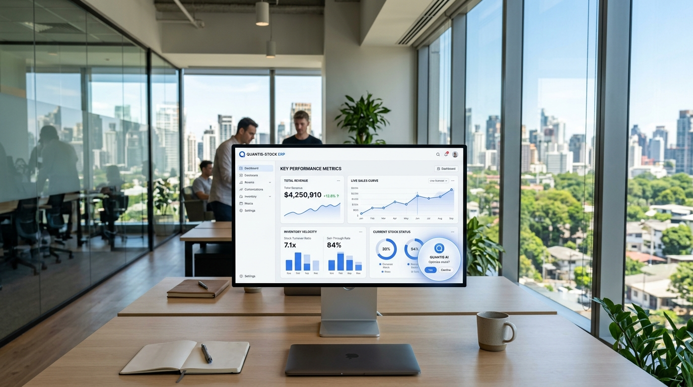

01 · ERP & POS

GESTION COMMERCIALE & MULTI-DÉPÔTS
Quantis-Stock
Progiciel complet de caisse comptoir (POS), gestion des stocks et facturation aux normes du Burkina Faso (FCFA, TVA 18 %, IFU & RCCM). Fonctionne hors-ligne sans interruption.
- Devis → Bon de livraison → Facture → Avoir en 1 clic
- 5 rôles RBAC (Admin, Gérant, Caissier, Magasinier, Comptable)
- Pilotage vocal intégré via Quantis Voice (double-clap)